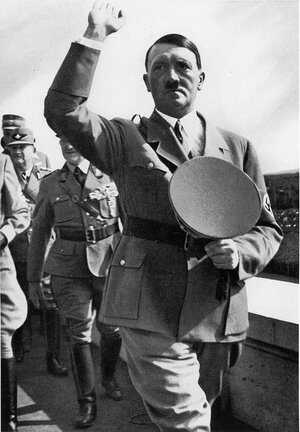
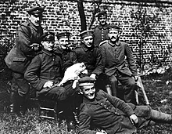
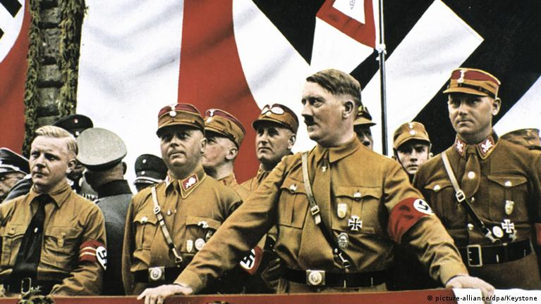
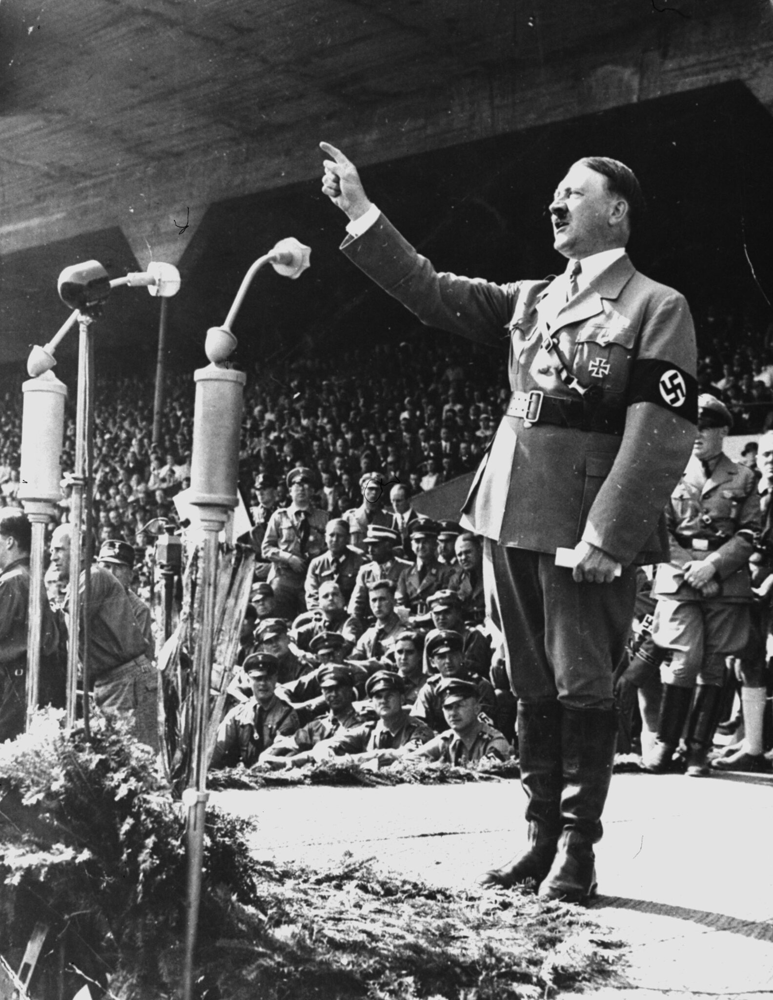
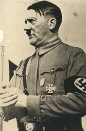
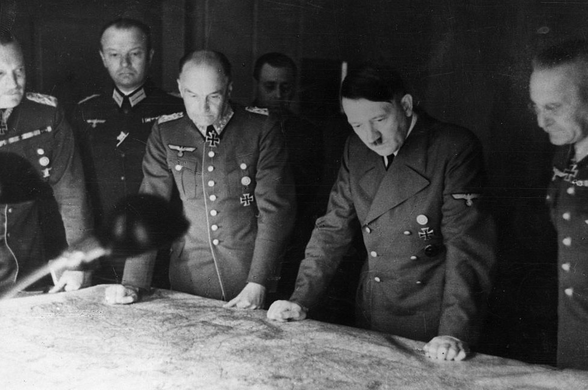
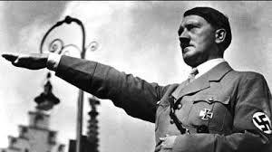

It's World War II
About Hitler
World War II
Adolf Hitler[a] (20 April 1889 – 30 April 1945) was an Austrian-born German politician who was the dictator of Nazi Germany from 1933 until his suicide in 1945.
He rose to power as the leader of the Nazi Party,[c] becoming the chancellor in 1933 and then taking the title of Führer und Reichskanzler in 1934.[d] During his dictatorship,
he initiated the European theatre of World War II by invading Poland on 1 September 1939. He was closely involved in military operations throughout the war and was central to the perpetration of the Holocaust:
the genocide of about six million Jews and millions of other victims.
History
Hitler was born in Braunau am Inn in Austria-Hungary and was raised near Linz.
He lived in Vienna later in the first decade of the 1900s before moving to Germany in 1913.
He was decorated during his service in the German Army in World War I.
In 1919, he joined the German Workers' Party (DAP), the precursor of the Nazi Party, and in 1921 was appointed leader of the Nazi
In 1923, he attempted to seize governmental power in a failed coup in Munich and was sentenced to five years in prison,
serving just over a year of his sentence. While there,
he dictated the first volume of his autobiography and political manifesto Mein Kampf ("My Struggle"). After his early release in 1924,
Hitler gained popular support by attacking the Treaty of Versailles and promoting pan-Germanism,
antisemitism and anti-communism with charismatic oratory and Nazi propaganda. He frequently denounced communism as being part of an international Jewish conspiracy.

American experience
He is Strongest Leader
Perhaps the most notorious figure of the 20th century, Adolf Hitler was the leader of the German Nazi (National Socialist German Workers') party and eventually became dictator over all of Germany.
Shortly after assuming the title of German führer, or leader, in 1934, Hitler moved to consolidate his rule by controlling the German people through carefully orchestrated propaganda campaigns.
He abolished freedom of speech and freedom of assembly, and began a systematic program of persecutions climaxed by the murder of millions of Jews, Romani people, and political opponents.
Repudiating the conditions of the Versailles treaty that ended World War I, Hitler sought to expand the German empire.
Beginning with the remilitarization of the Rhineland in 1936, Hitler made bold military moves, and cunningly manipulated European leaders into accepting his advances.
On September 1, 1939, determined to eventually conquer all of Europe and the Soviet Union, he ordered the invasion of Poland, thereby setting off World War II.
For the first two years of the war, Hitler's dream of domination of Europe seemed within his grasp. As the Allies began to rebound in 1943, however, Hitler became more desperate in his decision-making. His reign of terror came to an end in April 1945. With Soviet troops bearing down on Berlin, and American forces routing what remained of the German army in the surrounding areas, Hitler committed suicide in his underground bunker.

For thrill-seekers and automotive enthusiasts, the Nürburgring offers a range of
driving experiences. Whether you're a seasoned racer or a novice looking to test your
skills, our track days and driving courses provide an unforgettable adventure on
the world-renowned Nordschleife.
Hitler!!!
By November 1932, the Nazi Party held the most seats in the Reichstag but did not have a majority. No political parties were able to form a majority coalition in support of a candidate for chancellor.
Former chancellor Franz von Papen and other conservative leaders convinced President Paul von Hindenburg to appoint Hitler as chancellor on 30 January 1933. Shortly thereafter,
the Reichstag passed the Enabling Act of 1933 which began the process of transforming the Weimar Republic into Nazi Germany, a one-party dictatorship based on the totalitarian and autocratic ideology of Nazism.
Upon Hindenburg's death on 2 August 1934, Hitler succeeded him, becoming simultaneously the head of state and government with absolute power. Domestically, Hitler implemented numerous racist policies and sought to deport or kill German Jews.
His first six years in power resulted in rapid economic recovery from the Great Depression, the abrogation of restrictions imposed on Germany after World War I, and the annexation of territories inhabited by millions of ethnic Germans, which initially gave him significant popular support.

Wars
They war and why?
Hitler had an overriding ambition for territorial expansion, which was largely driven by his desire to reunify the German peoples and his pursuit of Lebensraum,
“living space” that would enable Germans to become economically self-sufficient and militarily secure.
Such goals were greeted with support by many within Germany who resented the harsh terms of the Treaty of Versailles,
which had ended World War I. Through various means he was able to annex Austria and Czechoslovakia with little resistance in 1938–39.
Then on September 1, 1939, Germany invaded Poland, which had been guaranteed French and British military support should such an event occur.
Two days later both countries declared war on Germany, launching World War II.

Interested in Hitler photos?
see this




click photos for see my github